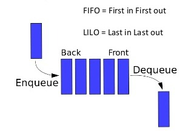

Antrian(Queue)
Antrian adalah sebuah kumpulan item yang tersusun rapi di mana penambahan item baru terjadi di satu ujung yang disebut “rear” (belakang), dan penghapusan item yang sudah ada terjadi di ujung lainnya yang disebut “front” (depan).
-> Prinsip urutan ini disebut FIFO (first-in first-out), yaitu item yang masuk pertama akan keluar pertama. Prinsip ini juga dikenal sebagai “first-come first-served” (yang datang duluan dilayani duluan).
Operasi pada Antrian:
Queue() → membuat queue (antrian) baru yang kosong. Tidak membutuhkan parameter dan menghasilkan queue kosong.
enqueue(item) →menambahkan item baru ke bagian belakang queue. Membutuhkan item dan tidak mengembalikan apa pun.
dequeue() →menghapus item paling depan dari queue dan mengembalikannya. Tidak membutuhkan parameter. Queue akan berubah.
isEmpty() → mengecek apakah queue kosong. Tidak membutuhkan parameter dan mengembalikan nilai boolean (benar/salah).
size() → mengembalikan jumlah item dalam queue. Tidak membutuhkan parameter dan menghasilkan bilangan bulat (integer).

Implementasi Python:
python
def queue(): q = [] return q def enqueue(q, data_baru): q.append(data_baru) return q def dequeue(q): data_hapus = q.pop(0) return data_hapus def isempty(q): return q == []
python
queue = []
kosong = not bool(queue)
print("isEmpty:", kosong)
queue.append(10)
queue.append(15)
queue.append(20)
print("enqueue:", queue)
front = queue[0]
dequeue = queue.pop(0)
queue.append(25)
print("peek:", front)
print("pop:", dequeue)
print("isi antrean sekarang:", queue)
print("size:", len(queue))